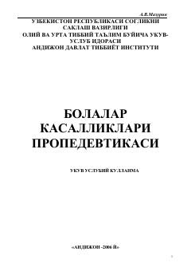

BKBolalar kasalliklari propedevtikasi va bolalik davrlari fiziologiyasiga bag'ishlangan o'quv qo'llanma.
Mazkur o'quv-uslubiy qo'llanmada bolalar organizmining anatomik va fiziologik xususiyatlari, bolalik davrlari tasnifi hamda ularni yoshga qarab baholash masalalari yoritilgan. Shuningdek, homila rivojlanish bosqichlari va turli davrlardagi patologik holatlar batafsil bayon etilgan.